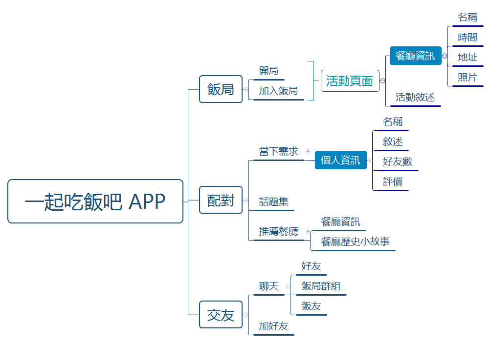
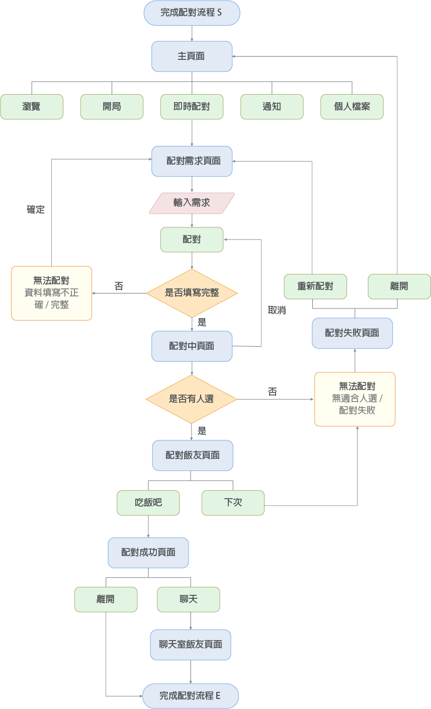
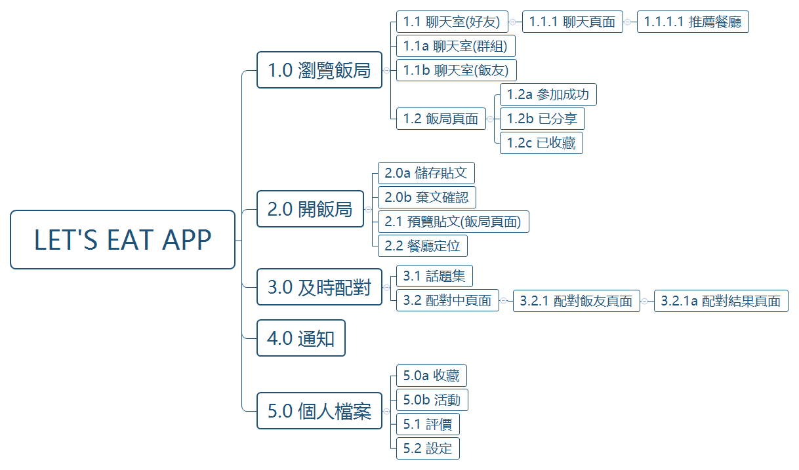

Ideate
吃是每天都要做的事情，然而每天吃飯總是有「等下要吃什麼？」，與不想一個人吃飯的困擾。於是，我們想要透過APP，藉由吃飯這件簡單的活動，拉近人與人之間的距離。只要雙方配對成功，APP將會提供三個私房景點或是特色老店，讓使用者能不再一個人吃飯，同時解決不知道要吃什麼的煩惱。
Build up from nothing
最初的內容生成是較困難的，我們將功能拆分成資訊與功能性做分析。在資訊方面，藉由參考現有提供餐廳相關資訊的APP，了解哪些內容需要提供。功能方面，「即時配對」與「社群」兩個概念都需要被深入研究。即時配對方面，我們參考交友軟體如Rooit、Wootalk...等的設計。社群方面則是一門複雜的學問，包含如何讓使用者建立身分、維護形象、歸屬感...都是在設計時需要被考量的。
//
Functional Map
藉由功能圖可以更了解APP本身的定位。原本希望有即時配對的功能，然而考量用戶基數的問題，若前期無吸引到一定的人數是無法配對的。因此我們加入了開飯局的功能，讓用戶可以用辦餐聚的方式認識彼此，同時能培養用戶數。
再者，考量到APP交友性質的程度。希望在APP中建立社群，提升黏著度，但又希望避免被用於濫交好友。於是我們在好友的功能中，設立一些機制，如功能圖所示。
Flow Chart
有了基本功能的想法後，我們選了一項任務：「完成配對」來建立流程圖。流程圖展示過程中應該出現的介面與介面之間的關聯。在反覆修改的過程中，透過預想使用者在操作過程中可能面臨的問題的方式，盡可能讓流程順暢。
UI Flow
為了避免過於冗長的介面圖，UI Flow採用文字版更能快速了解頁面的先後順序。頁面的編號可以用於Wireframe，相互對照。編號中英文字母的部分代表其為Popover或是同頁中部分內容滑動。
//
Visual Design